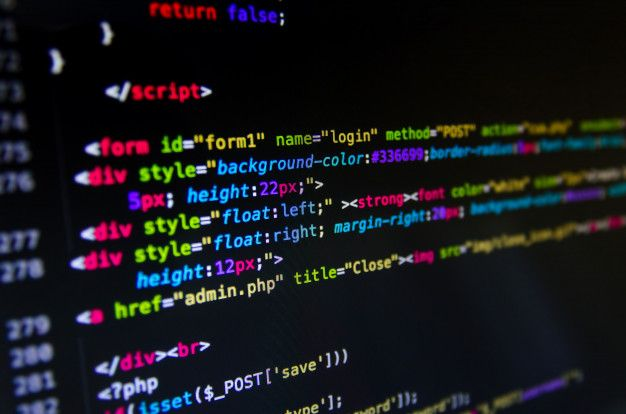

My Journey into Coding

I started my coding journey a few years ago and it has been an incredible experience.
Learning different programming languages and working on various projects have given me a
deep appreciation for technology.
- Learned HTML, CSS, and JavaScript
- Built several web projects
- Participated in coding bootcamps
For more tips on getting started with coding, check out this
link.
Computer Gaming Adventures
Aside from coding, I spend a lot of my free time immersed in computer gaming. It's a great way
to relax and unwind after a long day. I enjoy playing a variety of games, from strategy to
role-playing games.
- Top strategy games of the year
- My favorite RPGs
- Tips for building the ultimate gaming setup
Learn more about the latest gaming trends
here.
Cooking Delicious Meals

Cooking is another passion of mine. I enjoy experimenting with new recipes and creating
delicious meals for my family and friends. There's something special about bringing people
together over a home-cooked meal.
- Trying new recipes
- Healthy eating tips
- Hosting dinner parties
Discover some of my favorite recipes
here.